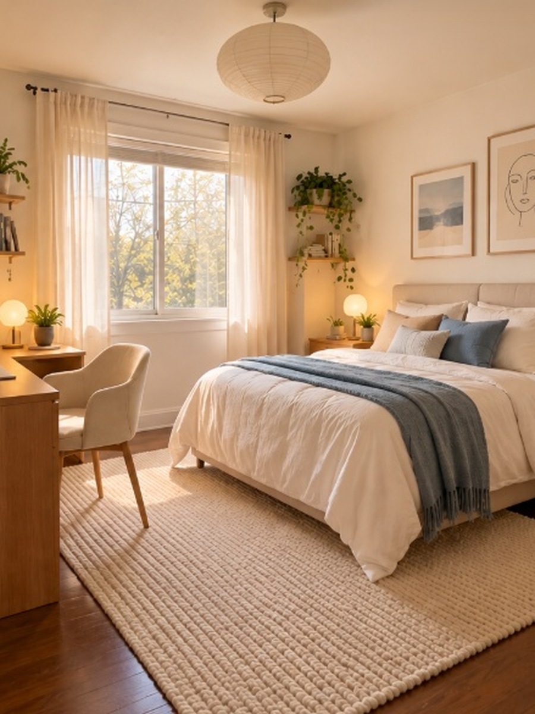
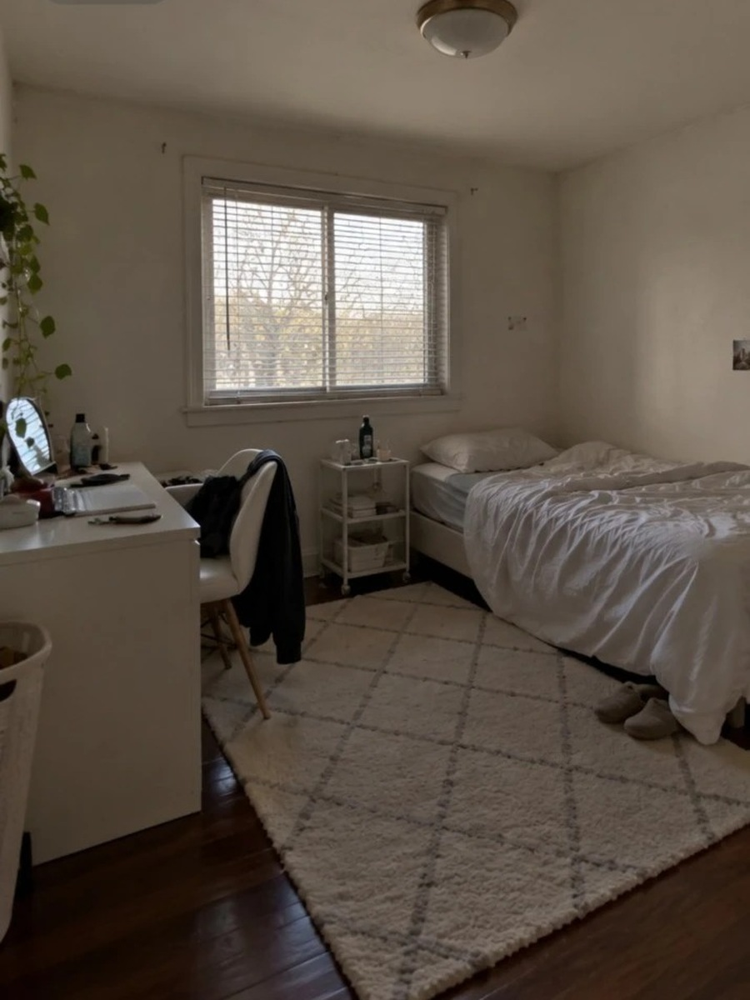

Straight from your phone. That is the whole brief.
Every window, door and piece of furniture, found and counted.
The whole photograph, in one pass.
Same view, same walls and window. New finishes, furniture and light.


Any room, redesigned from a single photo.
Your room, its second draft.